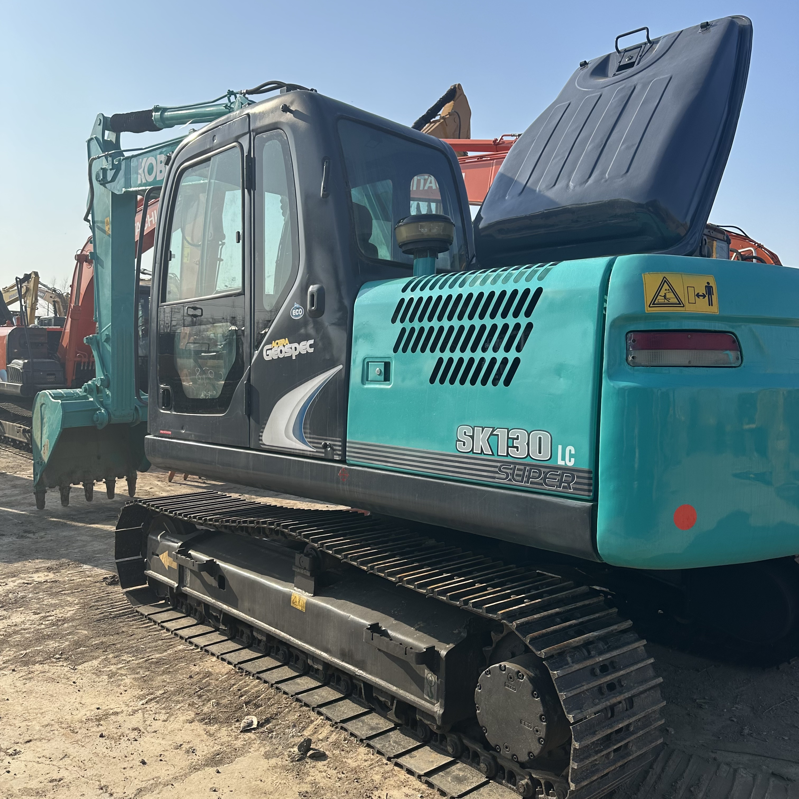

Refurbished Kobelco SK130 Excavator
The Kobelco SK130 is a versatile and robust excavator designed for a wide range of tasks, including construction, demolition, and landscaping. Known for its efficiency, powerful performance, and durability, the SK130 is ideal for applications requiring precision, maneuverability, and high lifting capacities. When considering a cost-effective option, a refurbished Kobelco SK130 excavator offers an attractive alternative to purchasing a brand-new machine, providing significant savings without compromising on performance.
Honestly, it's almost impossible to buy a brand new excavator from China. They either don't exist or are made in China. If a Chinese seller tells you their Caterpillar/Komatsu/Volvo/Kobelco/Hitachi is brand new, they're lying. Therefore, a refurbished excavator is your best bet.

Here are the detailed specifications for a refurbished Kobelco SK130LC-8 or SK130LC-10 excavator:
Operating Weight and Dimensions
- Operating Weight: 13,000–13,500 kg
- Overall Length: ~7.9–8.2 meters
- Overall Width: ~2.59 meters
- Overall Height: ~2.9–3.0 meters
- Tail Swing Radius: ~2.3–2.4 meters
- Ground Clearance: ~440 mm
- Track Width: 500–600 mm standard
Engine and Powertrain
- Engine Model:
- SK130LC-8: Isuzu AM-4JJ1X
- SK130LC-10: HINO J05E Tier 4 Final
- Rated Power Output: ~96–105 hp (72–78 kW) @ 2,000 rpm
- Maximum Torque: ~480–520 Nm
- Fuel Tank Capacity: ~280–300 liters
- Travel Speed: 3.5–5.5 km/h
- Swing Speed: ~11 rpm
- Gradeability: Up to 35°
Hydraulic System
- Main Pump Type: Variable displacement axial piston pump
- Flow Rate: ~2 × 160–180 L/min
- System Pressure: Up to 31.5 MPa
- Hydraulic Oil Capacity: ~220 liters
- Boom Cylinder Bore: ~120 mm
- Arm Cylinder Bore: ~105 mm
- Bucket Cylinder Bore: ~95 mm
Performance Metrics
- Bucket Capacity: 0.5–0.6 m³
- Max Digging Depth: ~5.5–5.7 meters
- Max Reach (Horizontal): ~8.8–9.0 meters
- Max Dump Height: ~5.8–6.0 meters
- Bucket Digging Force: ~100–105 kN
- Arm Digging Force: ~70–75 kN
Cab and Operator Features
- Cab Type: ROPS/FOPS certified
- Display: Color LCD monitor with diagnostics and fuel tracking
- Controls: Electro-hydraulic joysticks with customizable sensitivity
- Comfort: Air-conditioned cab, high-back suspension seat, noise-insulated interior
- Visibility: Wide glass area, rear-view camera, LED work lights
Smart Features and Efficiency
- Fuel Efficiency: VG turbocharger + high-pressure common rail injection
- Emissions Control: EGR cooler + DPF system (Tier 4 Final compliant in SK130LC-10)
- Auto Idle & Eco Mode: Reduces fuel consumption during low-load operations
- Telematics Ready: KOMEXS system for remote diagnostics and fleet tracking
Attachments Compatibility
- Standard Bucket: 0.5–0.6 m³
- Optional Tools: Hydraulic breaker, demolition shear, compactor, ripper
- Quick Coupler: Hydraulic or manual options available
Refurbishment Scope
Refurbished SK130 units typically include:
- Engine overhaul (injectors, turbo, seals, DPF cleaning if applicable)
- Hydraulic pump recalibration or replacement
- Electrical system rewiring and sensor testing
- Cab restoration (seat, controls, HVAC, monitor)
- Structural repairs (boom welding, bushing replacement, repainting)
Overview of the Kobelco SK130 Excavator
The Kobelco SK130 falls into the 13-ton class of crawler excavators, offering an ideal balance between power and size. Whether you're working in tight spaces or on larger-scale excavation projects, the SK130 is engineered to handle a variety of tasks with ease. Its design prioritizes fuel efficiency and performance, making it a reliable machine for long hours of operation in construction, earthmoving, and landscaping.
Key Specifications of the Kobelco SK130
-
Operating Weight: 13,000 kg (28,660 lbs)
-
Engine Power: 74 kW (99 horsepower)
-
Max Digging Depth: 6.2 meters (20.3 feet)
-
Max Reach: 8.9 meters (29.2 feet)
-
Max Lifting Capacity: 2,800 kg (6,170 lbs) at a radius of 3 meters
-
Bucket Capacity: Typically ranges from 0.3 to 0.6 cubic meters, depending on the configuration
With an optimal operating weight and powerful engine, the Kobelco SK130 is built to handle demanding tasks in a variety of environments while maintaining efficiency and operator comfort.
Key Features of the Kobelco SK130 Excavator
Powerful Engine and Efficient Performance
The Kobelco SK130 is powered by a high-performance Isuzu engine, delivering 99 horsepower. The engine’s design ensures optimal fuel efficiency, reducing the cost of operation and contributing to the machine’s overall eco-friendly performance. The SK130 features an eco-mode that allows operators to adjust the engine’s output for varying workload conditions, improving fuel consumption during light operations and boosting power for more demanding tasks.
-
Fuel-Efficient Technology: The engine’s fuel efficiency technology contributes to reducing the machine’s carbon footprint, making the SK130 a more sustainable option compared to machines that consume excessive fuel.
Advanced Hydraulic System for Smooth Operation
The hydraulic system in the Kobelco SK130 is designed for high efficiency, offering excellent control and faster cycle times. Key features include:
-
Load-Sensing Hydraulics: This system adjusts hydraulic output according to the load being carried or the task at hand, ensuring that the machine performs efficiently without wasting energy.
-
Variable Displacement Pump: The pump dynamically adjusts flow based on load, optimizing hydraulic power and improving fuel efficiency.
The hydraulic system provides precise control during digging, lifting, and loading tasks, making the SK130 ideal for delicate or precise work, such as trenching and landscaping.
Enhanced Operator Comfort
Kobelco designed the SK130 to ensure operator comfort, which can significantly impact productivity and reduce fatigue during long working hours. The machine features:
-
Spacious and Ergonomic Cabin: The cabin provides ample legroom and a comfortable seat, allowing operators to work comfortably for extended periods. The adjustable seat ensures that operators can customize their position for maximum comfort.
-
Excellent Visibility: The SK130 cabin is equipped with large windows and minimal obstructions, offering operators clear visibility of the work area, which is critical for tasks requiring precision.
-
Climate Control: The SK130 is equipped with an air conditioning and heating system, ensuring that the operator is comfortable in both hot and cold weather conditions, enhancing productivity in various climates.
Durable and Robust Undercarriage
The undercarriage of the Kobelco SK130 is designed for strength and durability, capable of withstanding harsh working environments. The machine features:
-
Heavy-duty Tracks: The SK130 is equipped with wide, durable tracks that provide excellent traction, whether working on soft, muddy ground or hard, rocky surfaces.
-
Longer Track Length: The long track length improves stability, ensuring that the machine remains steady even when working with heavy loads or on uneven terrain.
-
Track Tension System: The system ensures that the tracks remain at optimal tension throughout the machine’s service life, reducing wear and improving the undercarriage’s overall longevity.
Benefits of Purchasing a Refurbished Kobelco SK130 Excavator
Cost-Effectiveness
One of the primary reasons contractors choose refurbished equipment is the significant savings. A refurbished SK130 can cost up to 30-40% less than purchasing a brand-new machine. This reduced price enables businesses to allocate funds to other essential areas or acquire additional equipment. For small to medium-sized companies or contractors looking to save on capital expenditures, purchasing a refurbished unit is an excellent way to access high-performance equipment without breaking the budget.
Certified Refurbishment Process
Refurbished Kobelco SK130 excavators undergo a thorough refurbishment process to ensure that the machine performs like new. The process includes:
-
Engine Inspection and Repair: The engine is inspected for wear, and any necessary repairs are made to restore it to peak performance.
-
Hydraulic System Overhaul: Hydraulic pumps, hoses, and valves are checked for leaks or wear and replaced if necessary.
-
Repainting and Cosmetic Restoration: The machine’s exterior is repainted to restore its visual appeal, giving it a fresh, new look.
-
Comprehensive Testing: After repairs and upgrades, the excavator is subjected to a full system check to ensure that it operates as expected.
Typically, refurbished machines come with a warranty, which adds extra peace of mind to the purchase.
Environmental Benefits
Opting for a refurbished SK130 also helps reduce waste and lower the demand for new equipment production, making it an environmentally responsible choice. The reuse of equipment helps minimize the carbon footprint of construction and heavy machinery, making it an eco-friendly alternative to buying new.
Maintenance Tips for the Kobelco SK130 Excavator
Proper maintenance is essential to extend the life of the Kobelco SK130 and ensure optimal performance. Here are some important maintenance tips to follow:
Engine and Fluid Maintenance
-
Regularly check and change the engine oil and filters as recommended by the manufacturer to maintain engine health.
-
Check the coolant and fuel filters periodically to ensure proper engine operation.
Hydraulic System Care
-
Keep an eye on the hydraulic fluid levels and inspect the system for leaks.
-
Replace hydraulic filters regularly to prevent contamination, which can lead to poor performance and system failure.
Undercarriage and Track Maintenance
-
Inspect the tracks and rollers for wear and damage. Replace worn tracks and rollers to avoid additional stress on the undercarriage components.
-
Regularly clean the undercarriage to remove dirt and debris, as this can cause premature wear and reduce the performance of the tracks.
Cabin and Comfort Features
-
Regularly clean and inspect the cabin, paying attention to the air conditioning system and seats to maintain operator comfort.
-
Ensure that all windows and mirrors are clean and free of cracks to provide excellent visibility.
Conclusion
The Kobelco SK130 is a durable, powerful, and versatile excavator designed for a wide variety of applications. When purchasing a refurbished SK130, businesses can access a high-performing machine at a significantly lower cost, all while benefiting from the same level of reliability and functionality as a new model.
The machine’s excellent fuel efficiency, advanced hydraulic system, and operator-friendly design make it an ideal choice for construction, landscaping, and utility tasks. With proper maintenance and care, the Kobelco SK130 can provide many years of service, making it an excellent investment for businesses seeking cost-effective, reliable equipment.
Our Commitment
- 2 years / 4000 hours warranty.
- EPA certified.
- No sweatshop labor.
Contacts

- [email protected]
- Youtube Instagram Facebook
- Navigation: G206 (Sishu Bridge) in Changfeng County, Hefei City, Anhui Province, 200 meters north to the east